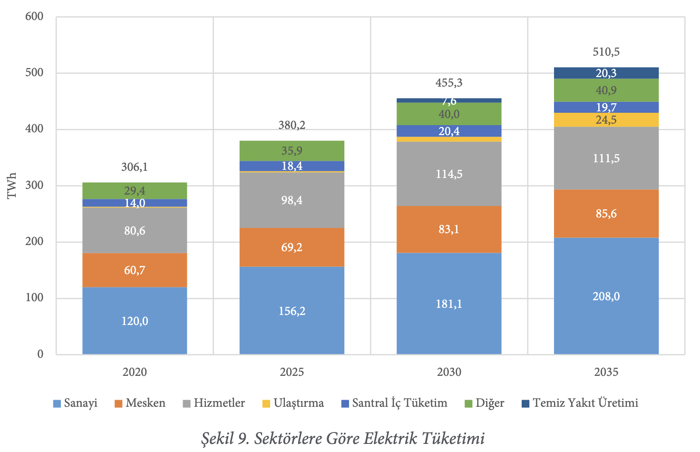
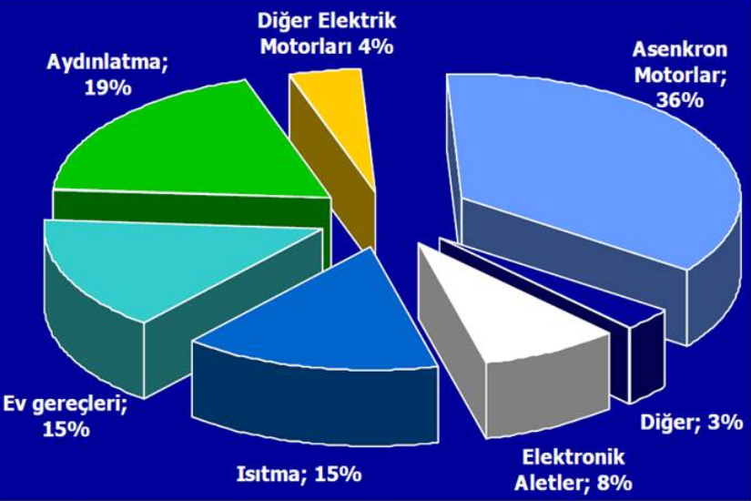
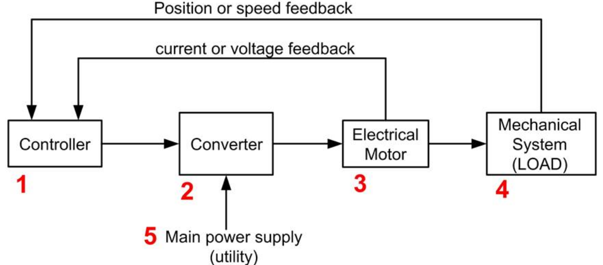
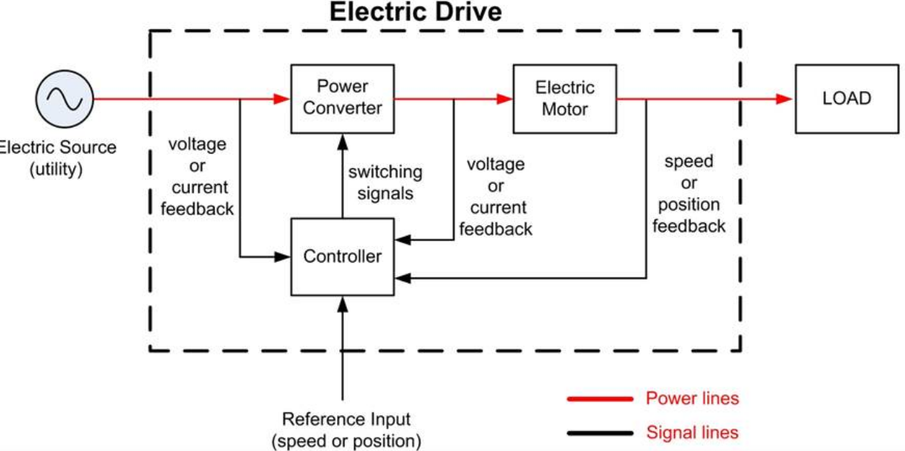
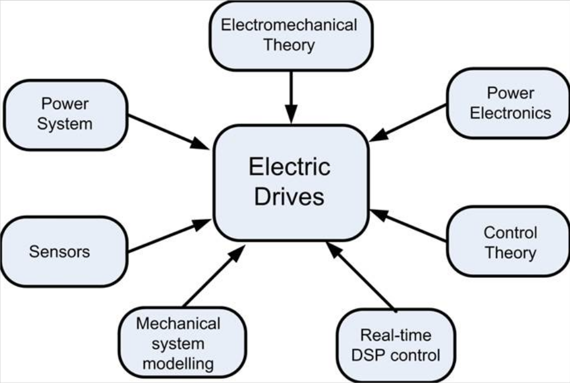
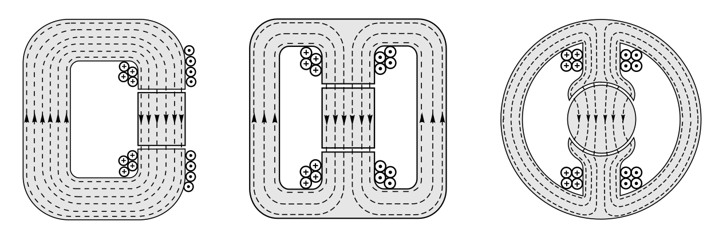
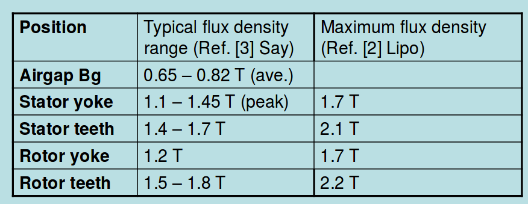

class: center, middle # EE-462 UTILIZATION OF ELECTRICAL ENERGY ## Ozan Keysan ## [keysan.me](http://keysan.me) ### Office: C-113 <span class="meta">•</span> Tel: 210 7586 --- # Where is the energy coming from? -- Brasil [700 MW Synchronous Generator](https://www.itaipu.gov.br/en/energy/generating-units) <img src="https://raw.githubusercontent.com/ozank/ozank.github.io/master/presentations/images/itaipu_hydro.png" alt="Drawing" style="width: 300px;"/> #### [Feynman on Electric Machines](https://www.youtube.com/watch?v=qhh32JYkQPk) "All wheels are turning because a big wheel is turning somewhere." --- # How it is transferred? -- <img src="https://raw.githubusercontent.com/ozank/ee361/master/images/electric_grid.png" alt="Drawing" style="width: 800px;"/> --- # Electric System of Turkey -- ## Capacity: 77 GW -- ## Max. Consumption: 43 GW (~22 million kettles) -- ## Per Capita Consumption: 3320 kWh/year --- # Sources of Energy (Turkey) ## Hydro: 26% <img src="http://www.nukte.org/files/images/hidrolik/hidrolik.jpg" alt="Drawing" style="width: 500px;"/> --- # Sources of Energy (Turkey) ## Coal: 29% <img src="http://vlscopenhagen.files.wordpress.com/2009/12/coal-plant1.jpg" alt="Drawing" style="width: 400px;"/> --- # Sources of Energy (Turkey) ## Natural Gas: 38% <img src="http://image.dieselpowermag.com/f/news/1207dp_is_the_natural_gas_really_greener/41858160/1207dp_01%2Bis_the_natural_gas_really_greener%2Bshell_gtl_plant_in_qatar.jpg" alt="Drawing" style="width: 500px;"/> --- # Sources of Energy (Turkey) ## Wind: 4.5% <img src="http://www.demirer.com.tr/santral/dares/03k.jpg" alt="Drawing" style="width: 500px;"/> --- <img src="https://raw.githubusercontent.com/ozank/ee361/master/images/turkiye_elektrik_iletim.png" alt="Drawing" style="width: 750px;"/> [Detailed Map](http://www.geni.org/globalenergy/library/national_energy_grid/turkey/graphics/teias_map.gif) --- # How electricity is consumed? -- ### 65% of the electricity in EU consumed by electric motors -- ### 46 % of the world's electricity is consumed by motors <img src="http://electronics360.globalspec.com/images/assets/073/73/1514028a-b1a3-4402-9e38-ed3b9ca19ab5.png" alt="Drawing" style="width: 700px;"/> --- # How electricity is consumed in Turkey? --  --- # How electricity is consumed in Turkey?  --- # Towards more efficient motors <img src="https://www.industry.siemens.com/drives/global/en/motor/low-voltage-motor/efficiency-standards/PublishingImages/efficiency-standards-01-en.jpg" alt="Drawing" style="width: 750px;"/> ### [Efficiency Classes](http://www.industry.siemens.com/drives/global/en/motor/low-voltage-motor/efficiency-standards/pages/line-motors.aspx) --- ### EU enforces [premium efficienct IE3 for all motors](https://en.wikipedia.org/wiki/Premium_efficiency) by 2017. <img src="https://www.industry.siemens.com/drives/global/en/motor/low-voltage-motor/efficiency-standards/PublishingImages/efficiency-standards-02-en.jpg" alt="Drawing" style="width: 600px;"/> ### Infogram on [efficiency of electric motors](http://c1cleantechnicacom-wpengine.netdna-ssl.com/files/2011/06/ABB-Electric-Motors-Efficiency-900px.png) **Reading material for curious students: ** [Energy-Efficiency Policy Opportunities for Electric Motor-Driven System](https://www.iea.org/publications/freepublications/publication/EE_for_ElectricSystems.pdf) --- # Main Elements of Electric Drives  --- # Main Elements of Electric Drives  --- # Multi-Disciplinary Nature of Electric Drives  --- # A Review of Magnetic Circuits --- ## Simplest Electric Machine <img src="http://australiancurriculumphysics.com.au/wp-content/uploads/2014/12/pic-force-on-a-current-carrying-wire.jpg" alt="Drawing" style="width: 650px;"/> -- ## \\(F = B I L\\) -- ## [World's simplest train](https://www.youtube.com/watch?v=J9b0J29OzAU) --- # A Review of Magnetic Circuits ## Magnetic Circuits vs Electric Circuits -- ## $$V=IR$$ -- ## $$\mathcal{F} = \Phi \mathcal{R}$$ -- ## $$\vec{J}=\rho \vec{E}$$ -- ## $$\vec{B} = \mu \vec{H}$$ --- ## From Magnetic Circuits to Motors  -- ### Does it produce any torque? Ref: [Electric Motors and Drives: Fundamentals, Types and Applications, 4th Edition](http://www.emic-bg.org/files/Electric_Motors___Drives.pdf), A. Hughes, Chapter-1 --- # Mechanical-Electrical Power -- # $$T = F r$$ -- # $$P = F v = T \omega = V I $$ -- # $$W = F x = T \theta = \int V I dt $$ --- # Specific Loadings of an Electric Machine -- ## Magnetic Loading: \\(\bar{B}\\) #### Average flux density in the air-gap over the entire cylindrical surface  ### [More info](http://www.eleceng.adelaide.edu.au/research/power/pebn/pebn009%20sizing%20of%20electrical%20machines.pdf) --- ## Electric loading: \\(\bar{A}\\), or \\(q\\) #### Average Ampere-turn per meter in the airgap circumference -- <img src="https://raw.githubusercontent.com/ozank/ozank.github.io/master/presentations/images/electric_loading.png" alt="Drawing" style="width: 750px;"/> --- # Typical Tangential Stress Values -- <img src="https://raw.githubusercontent.com/ozank/ozank.github.io/master/presentations/images/tangential_stress.png" alt="Drawing" style="width: 750px;"/> --- ### Can you guess the rated power of the following motors? -- <img src="http://image.made-in-china.com/43f34j00NOcQpjThbHqI/4kw-Three-Phase-Asynchronous-Squirrel-Cage-Aluminium-Induction-Electric-Motor-2HMA-132M1-6-4-.jpg" alt="Drawing" style="width: 400px;"/> -- ## 4 kW Induction Motor --- ### Can you guess the rated power of the following motors? -- <img src="http://articles.maritimepropulsion.com/image.axd?picture=2011%2f4%2fQEC_110218+qec+govan+prop+unit+install+262.jpg" alt="Drawing" style="width: 450px;"/> -- ## 20 MW Induction Motor for [HMS Queen Elizabeth](http://www.aircraftcarrieralliance.co.uk/~/media/Files/A/Aircraft-Carrier-Alliance-V2/documents/key-facts-v2.pdf) --- ### Can you guess the rated power of the following motors? -- <img src="http://www.intechopen.com/source/html/38933/media/image37.jpeg" alt="Drawing" style="width: 350px;"/> -- ### 5MW Enercon Wind Turbine Synchronous Generator (12 rpm!) --- ## Torque and Motor Volume -- ## \\(F = B I L\\) -- ## \\(F = \bar{B} \bar{A} w L\\) -- ## For a cylindrical machine: ## \\(F = \bar{B} \bar{A} 2 \pi r L\\) -- ## Then torque becomes: ## \\(T = \bar{B} \bar{A} 2 \pi r^2 L\\) --- # Torque of an Electric Machine ## \\(T = \bar{B} \bar{A} 2 \pi r^2 L\\) ## What is \\(\pi r^2 L\\) equal to? -- ## Size of an electric machine \\(\propto \\) Torque -- ## Power becomes: ## \\(P= T \omega = \bar{B} \bar{A} 2 \pi r^2 L \omega \\) --- # Specific Power Output ## (Power per volume) -- ## \\(Q \propto \bar{B} \bar{A} \omega \\) --- ## You can download this presentation from: [keysan.me/ee462](http://keysan.me/ee462)